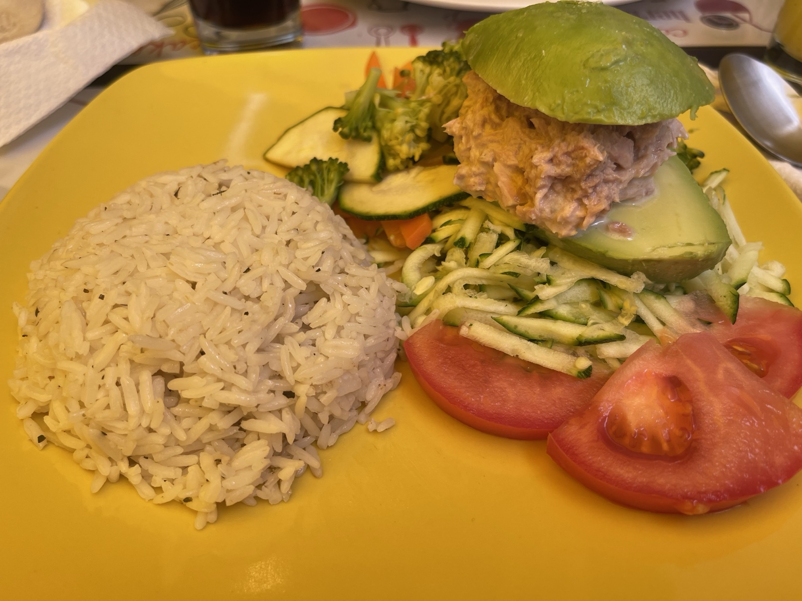
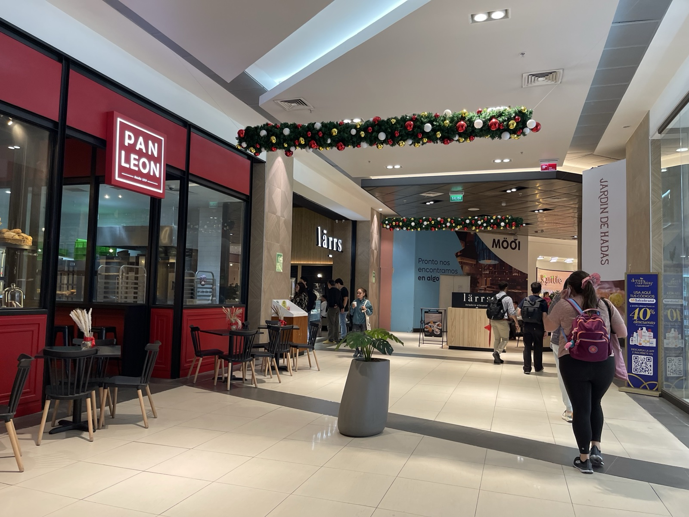
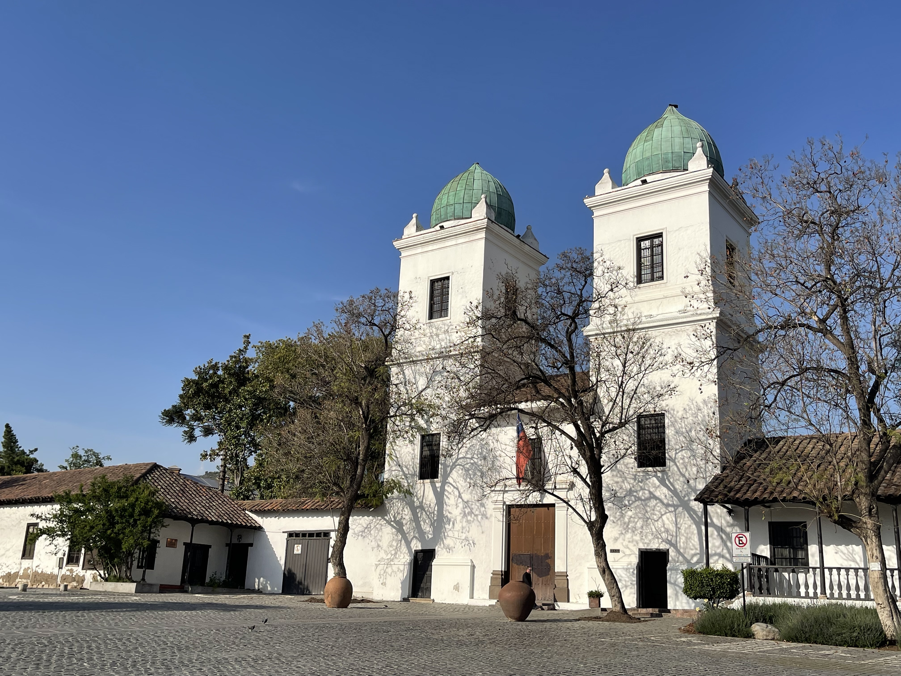

サンティアゴ最終日。次の目的地に移動する前に、もう少しだけ街を歩く。
チリのランチ — パルタ・レイナ
チリに来て食べたかったもののひとつがパルタ・レイナ（Palta Reina）だ。「女王のアボカド」という意味で、アボカドをくり抜いた中にチキンサラダやツナサラダを詰めた、チリの定番家庭料理だ。

チキンサラダをたっぷり詰めたアボカド、白いご飯、ズッキーニとにんじんのソテー、トマト。これで一皿の定食（アルムエルソ）になる。アボカドが大きくてクリーミーで、チキンサラダとの相性がいい。チリはアボカドの産地でもあり、スーパーでも安く売られている。
チリの食事は全体的にシンプルで重くない。味付けが穏やかで食べやすく、毎日でも食べられそうだった。
10月なのにクリスマス
午後はショッピングモールへ。驚いたのが、すでにクリスマスの飾り付けが始まっていたことだ。チリは南半球なので10月は春にあたるが、それでもこの時期からデコレーションが出始める。


モールの作りは日本とよく似ていて、フードコート、アパレル、カフェが揃っている。チリの若者のファッションや過ごし方は思ったより日本に近い印象だった。南米だからといって何もかも違うわけではない。
サンティアゴは、来る前に期待していた以上にいい街だった。建築、食、人、そして乾いた青空。機会があればまた来たい。
チリ滞在を振り返って
1
サンティアゴ市内中心部
チリの首都。最高裁、大統領府（ラ・モネダ）、国立博物館など歴史的建築が集まるシビックセンターが見どころ。地下鉄（メトロ）が便利。
2
ラス・コンデス地区
サンティアゴ東部の高級住宅・商業地区。ロス・ドミニコス工芸市場やショッピングモールが集まる。